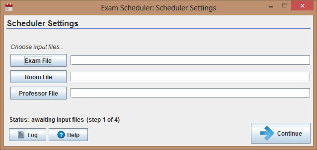
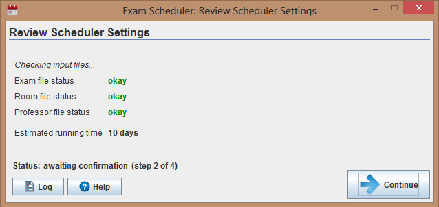
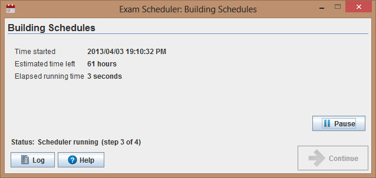
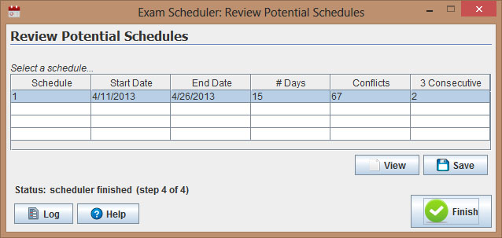

Help File
Panel One

The first panel is responsible for selecting the appropriate files to schedule the exams. The buttons labelled 'Exam File', 'Room File' and 'Professor File' all open a file selector dialog when clicked. Once all three of the files have been chosen the user is ready to move on and should click the 'Continue' button as depicted in the bottom-right corner.
Panel Two

The second panel is responsible for verifying the three input files selected in panel one. The three status labels 'Exam file status', 'Room file status' and 'Professor file status' will indicate if there is a problem with any of the files. If the three statuses all return okay then the user should again click the 'Continue' button.
Panel Three

The third panel does the scheduling of the exams, the three labels indicate when the scheduling began, the estimated time remaining (approximation) and the current elapsed running time. The 'Pause' button located above the 'Continue' button allows the user to halt (and resume) the scheduling of the exams. Once the scheduling is complete the 'Continue' button will become clickable once again and should be clicked to move onto the final panel.
Panel Four

The final panel displays the scheduled exam and its properties; the starting and ending date for the exam period, the length of the exam period (in days), the number of exam conflicts that exist in the schedule and the number of people with three consecutive exams. Below the scheduled exam panel there are two buttons; 'View' and 'Save'. The 'View' button opens the schedule to be viewed, and the 'Save' button allows the user to save the schedule in a desired format when pressed. When finished viewing and/or saving the schedule, the 'Finish' button in the bottom right will exit the program.